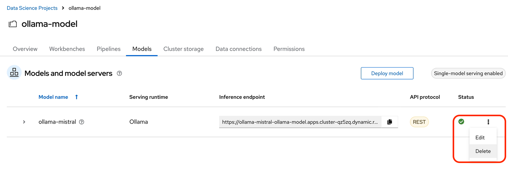
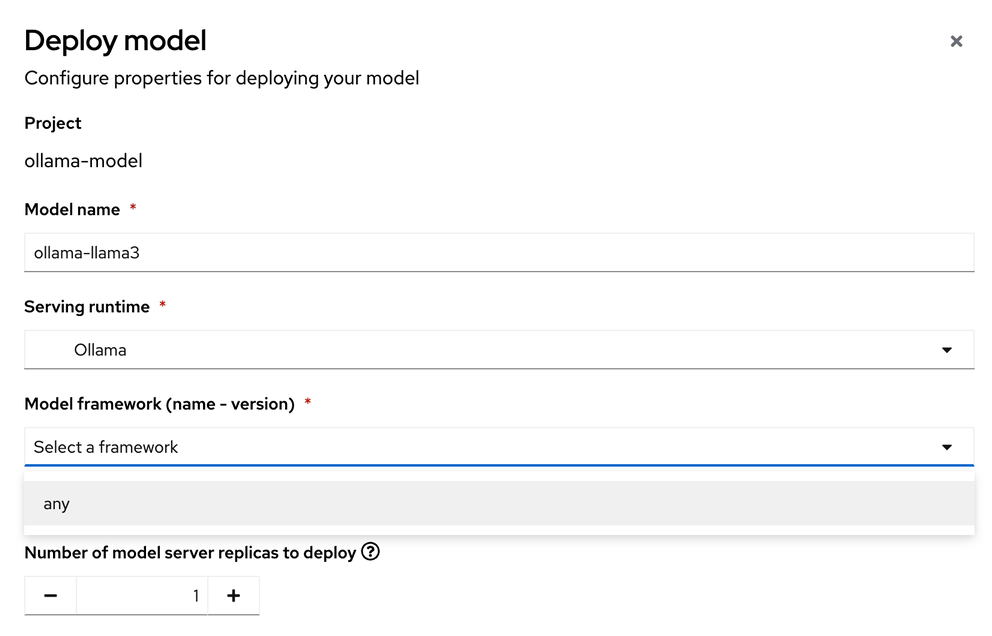
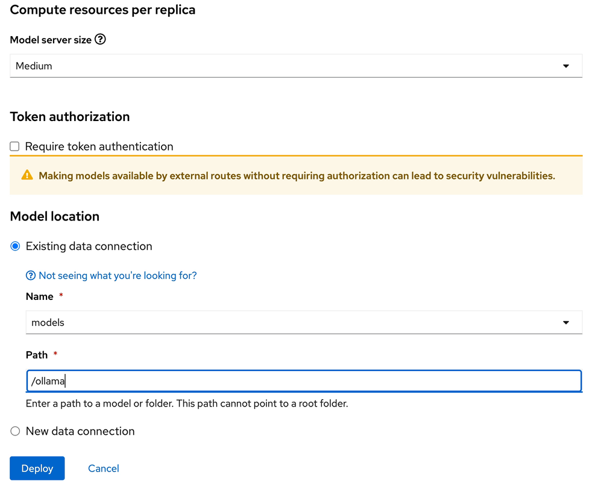
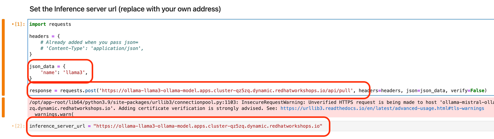

Llama3 LLM Model Inference
| The Ollama Model Runtime we deployed using the Single Model Serving Platform in OpenShift AI is a framework that can host various large language models. You can view the available models in the ollama library here. |
Lab: Switch to the Llama3 large language model
Meta Llama 3, a family of models developed by Meta Inc. are new state-of-the-art , available in both 8B and 70B parameter sizes (pre-trained or instruction-tuned).
Llama 3 instruction-tuned models are fine-tuned and optimized for dialogue/chat use cases and outperform many of the available open-source chat models on common benchmarks.
In this Lab, we experiment with a quantized version of the base Llama3 model
Delete existing deployed model
Return to the OpenShift AI Dashboard and ollama-model workbench
-
Head to the Model section of the workbench
-
To the right of the ollama-mistral model there are three stacked dots, select the dots, then delete from the menu
 -
You need to type in the ollama-mistral model name to confirm the deletion.
-
No need to wait, continue onto the next section.
Creating The Model Server
From the ollama-model WorkBench Dashboard in the ollama-model project, navigate to the Models section, and select Deploy Model.
Create the model server with the following values:
-
Model name:
ollama-llama3 -
Serving Runtime:
Ollama -
Model framework:
Any -
Model Server Size:
Medium -
Model location data connection:
models -
Model location path:
/ollama
After clicking the Deploy button at the bottom of the form, the model is added to our Models & Model Server list. When the model is available, the inference endpoint will populate & the status will indicate a green checkmark.
Copy the Inference endpoint for the newly deployed model, we need to replace the original inference endpoints used in our notebook’s top two cells.
Update the inference endpoints & change the model name
-
Return to the jupyter notebook
-
Replace the both previous inference endpoints with the ollama-llama3 endpoint url.
 -
In the python code cell, or first cell under set the inference server url heading. We need to change the name of the large language model in the json_data section from "mistral" to "llama3"
-
The final edit we need to change is to rename mistal to llama3 in the create the llm instance cell
Execute the cells again
-
We can now start executing the code in the cells, beginning from the top at Set inference server cell. Click to the left of the cell to activate the orange indicator next to the cell. Orange indicates the cell code has been modified, blue will still highlight for unmodified cells.
-
You will again receive the message about an unverified HTTPs request. This is because we didn’t use authentication for this application.
-
The llama3 model files are now being downloaded to the Ollama Framework.
-
-
Continue executing the cells in the notebook.
When you arrive at the "Let’s Talk" cells, re-read the mistral responses before executing the cells as answers will replaced with the llama3 responses.
When you reach the bottom of the notebook, feel free to experiment with the Llama3 model by creating your own more complex prompts.
Experiment with Llama3
Instead of editing the questions try experimenting with system prompt:
-
edit the create the prompt cell system message to alter the personality of the large language model responses. Instruct the model to: use humor, respond like I’m five years old, or perhaps like an historian.
Try adjusting the top_p, temperature, repeat penalty values in the "create an LLM instance" cell
-
Edit the create the LLM instance cell to adjust the values set for the model tuning parameters to explore the difference in answers.
Deploy a different large language model
-
Vist the Ollama Model Library and deploy a new model on your own. Perhaps the granite-code model from IBM for code intelligence.
Once you complete your learning, don’t forget to return to Red Hat Demo Hub to stop the environment if you plan to return. Delete the environment when you’re finished.
Thanks for completing this course!